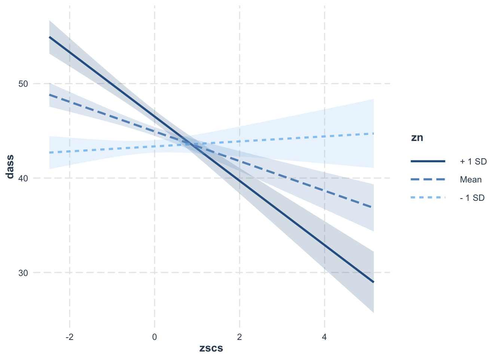
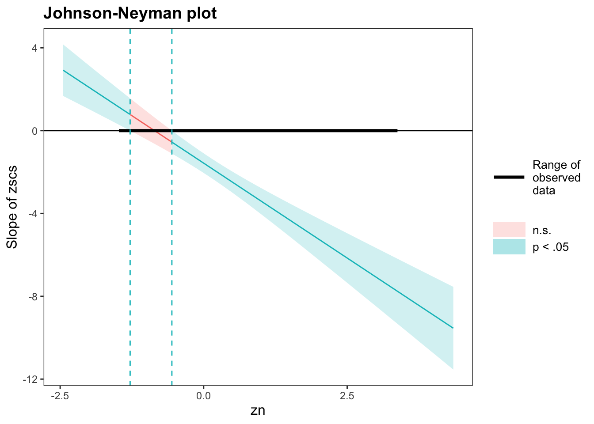
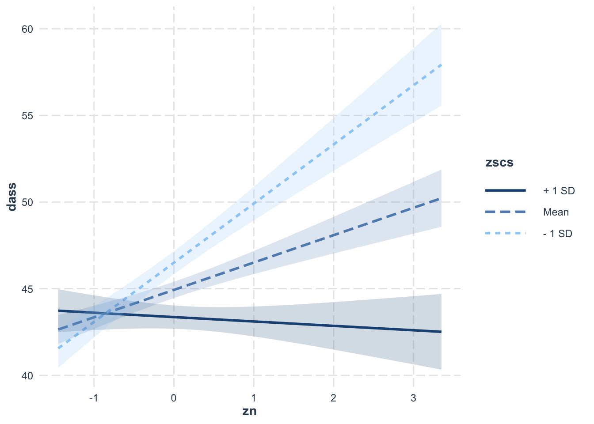
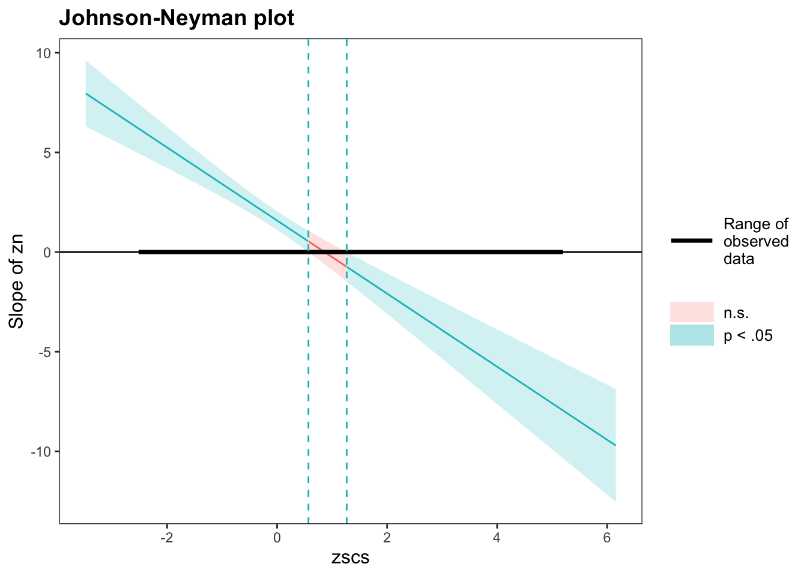

| variable | description |
|---|---|
| zo | Openness (Z-scored), measured on the Big-5 Aspects Scale (BFAS) |
| zc | Conscientiousness (Z-scored), measured on the Big-5 Aspects Scale (BFAS) |
| ze | Extraversion (Z-scored), measured on the Big-5 Aspects Scale (BFAS) |
| za | Agreeableness (Z-scored), measured on the Big-5 Aspects Scale (BFAS) |
| zn | Neuroticism (Z-scored), measured on the Big-5 Aspects Scale (BFAS) |
| scs | Social Comparison Scale (SCS): An 11-item scale that measures an individual’s perception of their social rank, attractiveness and belonging relative to others. The scale is scored as a sum of the 11 items (each measured on a 5-point scale), with higher scores indicating more favourable perceptions of social rank |
| dass | Depression Anxiety and Stress Scale (DASS-21): The DASS-21 includes 21 items, each measured on a 4-point scale. The score is derived from the sum of all 21 items, with higher scores indicating higher a severity of symptoms |
12: Numeric/numeric interactions
This week, you’ll fit an model with an interaction between two numeric variables, and you’ll practice interpreting the symmetry of that interaction.
NoteGet set up
- Open RStudio.
- Create a new .Rmd file for this week’s exercises.
- Save it somewhere you can find it again.
- Give it a clear name (for example,
dapr2_lab12.Rmd). - In the first code chunk, load the packages you’ll need this week (and install them if you don’t have them already):
tidyverseinteractions
RQ: Does the effect of social comparison on symptoms of depression, anxiety and stress vary depending on level of Neuroticism?
Data dictionary:
NoteMore detail about this dataset
Previous research has identified an association between an individual’s perception of their social rank and symptoms of depression, anxiety and stress. We are interested in the individual differences in this association.
The data in scs_study.csv contain seven attributes collected from a random sample of \(n=656\) participants.
Read in data
q1
Question 1
Read in the data from https://uoepsy.github.io/data/scs_study.csv and store it in a variable named scdata (“sc” stands for “social comparison”).
sc_data <- read_csv("https://uoepsy.github.io/data/scs_study.csv")
q2
Question 2
zn, that is, z-scored neuroticism, is on the z-score scale already. But scs is not.
Convert scs into a z-score and name the new variable zscs.
🗂️ See TODO flash card.
sc_data <- sc_data |>
mutate(
zscs = (scs - mean(scs))/sd(scs)
)Check that mean is 0 and SD is 1:
mean(sc_data$zscs) |> round()[1] 0sd(sc_data$zscs) |> round()[1] 1
Anticipate model coefficients
q3
Question 3
What does zn = 0 represent? What about zscs = 0?
🗂️ See TODO flash card.
zn = 0represents the mean neuroticism in our sample.zscs = 0represents the mean social comparison score (SCS) in our sample.
q4
Question 4
The model you will fit in Q5 below is the following:
\[ \text{dass} = \beta_0 + (\beta_1 \cdot \text{zscs}) + (\beta_2 \cdot \text{zn}) + (\beta_3 \cdot \text{zscs} \cdot \text{zn}) + \epsilon \]
This model has four coefficients.
(Intercept)= \(\beta_0\)zscs= \(\beta_1\)zn= \(\beta_2\)zscs:zn= \(\beta_3\)
Based on the zero points you identified in Q3, write one sentence for each coefficient that describes what it will mean.
🗂️ See TODO flash card.
(Intercept)= \(\beta_0\)- The estimated mean DASS score when SCS and Neuroticism are at their respective means (represented as zero because they are both z-scored).
zscs= \(\beta_1\)- When z-scored Neuroticism is at its mean of zero, how much does DASS increase/decrease when z-scored SCS increases by one standard deviation?
zn= \(\beta_2\)- When z-scored SCS is at its mean of zero, how much does DASS increase/decrease when z-scored Neuroticism increases by one standard deviation?
zscs:zn= \(\beta_3\)- When z-scored SCS increases by one standard deviation, how much does the association between DASS and z-scored Neuroticism increase/decrease?
- Or equivalently: When z-scored Neuroticism increases by one standard deviation, how much does the association between DASS and z-scored SCS increase/decrease?
Set up and fit the model
q5
Question 5
Fit the model describe by the mathematical model expression given in Q4. Name it sc_mdl.
🗂️ See TODO flash card.
sc_mdl <- lm(dass ~ zscs * zn, data = sc_data)
q6
Question 6
Generate the model summary for sc_mdl and write a sentence or two to interpret each coefficient.
🗂️ See TODO flash card.
summary(sc_mdl)
Call:
lm(formula = dass ~ zscs * zn, data = sc_data)
Residuals:
Min 1Q Median 3Q Max
-16.301 -3.825 -0.173 3.733 45.777
Coefficients:
Estimate Std. Error t value Pr(>|t|)
(Intercept) 44.9324 0.2405 186.807 < 2e-16 ***
zscs -1.5691 0.2416 -6.495 1.64e-10 ***
zn 1.5798 0.2409 6.559 1.11e-10 ***
zscs:zn -1.8332 0.2316 -7.915 1.06e-14 ***
---
Signif. codes: 0 '***' 0.001 '**' 0.01 '*' 0.05 '.' 0.1 ' ' 1
Residual standard error: 6.123 on 652 degrees of freedom
Multiple R-squared: 0.1825, Adjusted R-squared: 0.1787
F-statistic: 48.5 on 3 and 652 DF, p-value: < 2.2e-16(Intercept)- The estimated mean DASS score when SCS and Neuroticism are at their respective means is 44.93 points.
zscs- With z-scored Neuroticism is at its mean of zero, one standard deviation increase in z-scored SCS is associated with a decrease in DASS score of 1.57 points.
- This estimate is significantly different from zero (\(p\) < .001).
zn- With z-scored SCS is at its mean of zero, one standard deviation increase in z-scored Neuroticism is associated with an increase in DASS score of 1.58 points.
- This estimate is significantly different from zero (\(p\) < .001).
zscs:zn- When z-scored SCS increases by one standard deviation, the association between DASS and z-scored Neuroticism is estimated to decrease by 1.83 points.
- Or equivalently: When z-scored Neuroticism increases by one standard deviation, the association between DASS and z-scored SCS is estimated to decrease by 1.83 points.
- This estimate is significantly different from zero (\(p\) < .001).
Simple slopes from one angle
q7
Question 7
Here’s a plot of the simple slopes from this sc_mdl; that is, the lines associating zscs with dass for specific values of zn (the mean, mean + 1 SD, and mean – 1 SD).
interact_plot(
sc_mdl,
pred = 'zscs',
modx = 'zn',
interval = T
)
Write a sentence or two to explain how the model’s interaction coefficient estimate relates to the lines shown on this plot. (If in doubt, refer to the interpretation you wrote in Q6.)
🗂️ See TODO flash card.
Above we wrote: “When z-scored Neuroticism increases by one standard deviation, the association between DASS and z-scored SCS is estimated to decrease by 1.83 points.”
We can see that decrease in this plot if we compare the dashed medium-blue line (zn at its mean) to the solid dark blue line (zn at its mean +1 SD). The slope of the solid dark blue line is steeper and more negative, compared to the slope of the dashed medium-blue line—more negative precisely by 1.83 points, the value of the interaction coefficient.
q8
Question 8
Generate a Johnson-Neyman plot with the pred and modx parameters set above (that is, pred = zscs and modx = zn).
Write a sentence or two to explain to yourself what the plot is showing.
TipCode hint
Replace ... with the appropriate values.
probe_interaction(
...,
pred = ...,
modx = ...,
jnplot = T
)$simslopes$jnplotAlternatively:
sim_slopes(
...,
pred = ...,
modx = ...,
jnplot = TRUE
)$jnplot🗂️ See TODO flash card.
sim_slopes(sc_mdl, pred = zscs, modx = zn, jnplot = TRUE)$jnplot
The line on the plot shows that the slope of the line associating zscs with dass (y axis) decreases as the value of zn (x axis) increases. The colour/shading indicates that the slope of zscs is positive and significantly different from zero below about zn = –1.25, and that it’s negative and significantly different from zero above about zn = –0.5.
Simple slopes from the other angle
q9
Question 9
Now let’s look at the simple slopes from the other angle, switching around how we’re visualising the two continuous numeric variables.
The plot below shows the lines associating zn with dass for specific values of zscs (the mean, mean + 1 SD, and mean – 1 SD).
interact_plot(
sc_mdl,
pred = zn,
modx = zscs,
interval = T
)
Write a sentence or two to explain how the model’s interaction coefficient estimate relates to the lines shown on this plot. (If in doubt, refer to the interpretation you wrote in Q6.)
🗂️ See TODO flash card.
Above we wrote: “When z-scored SCS increases by one standard deviation, the association between DASS and z-scored Neuroticism is estimated to decrease by 1.83 points.”
Again, we can see that decrease in this plot the same way as before: if we compare the dashed medium-blue line (zscs at its mean) to the solid dark blue line (zscs at its mean +1 SD). The slope of the solid dark blue line is steeper and more negative, compared to the slope of the dashed medium-blue line—once again, more negative by 1.83 points, the value of the interaction coefficient.
Q7 together with Q9 are meant to illustrate how the same interaction term can describe the same relationships between variables from two different angles.
q10
Question 10
Generate a Johnson-Neyman plot with the pred and modx parameters set in Q9 (that is, pred = zn and modx = zscs).
Write a sentence or two to explain to yourself what the plot is showing.
🗂️ See TODO flash card.
sim_slopes(sc_mdl, pred = zn, modx = zscs, jnplot = TRUE)$jnplot
The line on the plot shows that the slope of the line associating zn with dass (y axis) decreases as the value of zscs (x axis) increases. The colour/shading indicates that the slope of zn is positive and significantly different from zero below about zscs = 0.6, and that it’s negative and significantly different from zero above about zscs = 1.25.